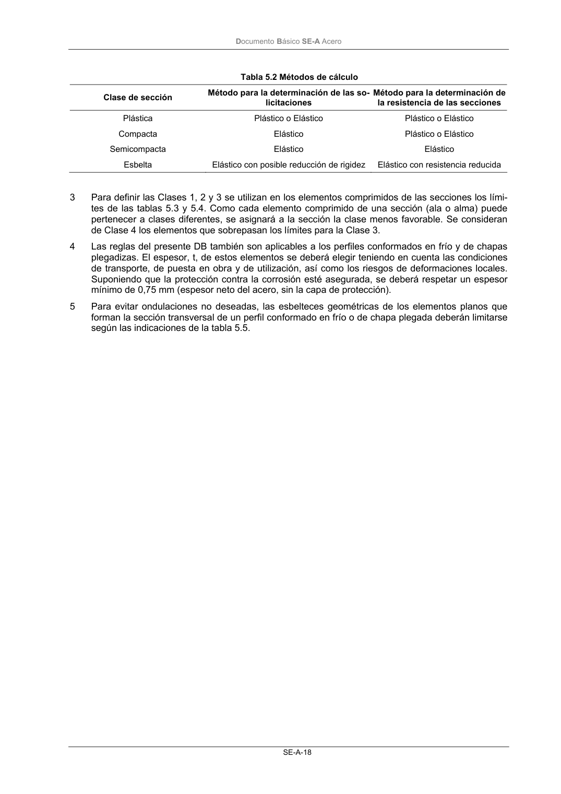

DB-SE-A Acero · edición 2007-10-23 · capa oficial
Documento DB-SE-A-oficial · SHA-256 del PDF 9ed9ea694aabfbda3bfbbef40dfe9223fde05d13c35bc2ba9751e5a96a22a64f
Página física 20 de 168.
Copia fiel del PDF fuente · Fuente oficial
Ficha de la disposición en la fuente oficial
Formato: Texto de la página (Markdown)
Documento Básico SE-A Acero SE-A-18 Tabla 5.2 Métodos de cálculo Clase de sección Método para la determinación de las so- licitaciones Método para la determinación de la resistencia de las secciones Plástica Plástico o Elástico Plástico o Elástico Compacta Elástico Plástico o Elástico Semicompacta Elástico Elástico Esbelta Elástico con posible reducción de rigidez Elástico con resistencia reducida 3 Para definir las Clases 1, 2 y 3 se utilizan en los elementos comprimidos de las secciones los lími- tes de las tablas 5.3 y 5.4. Como cada elemento comprimido de una sección (ala o alma) puede pertenecer a clases diferentes, se asignará a la sección la clase menos favorable. Se consideran de Clase 4 los elementos que sobrepasan los límites para la Clase 3. 4 Las reglas del presente DB también son aplicables a los perfiles conformados en frío y de chapas plegadizas. El espesor, t, de estos elementos se deberá elegir teniendo en cuenta las condiciones de transporte, de puesta en obra y de utilización, así como los riesgos de deformaciones locales. Suponiendo que la protección contra la corrosión esté asegurada, se deberá respetar un espesor mínimo de 0,75 mm (espesor neto del acero, sin la capa de protección). 5 Para evitar ondulaciones no deseadas, las esbelteces geométricas de los elementos planos que forman la sección transversal de un perfil conformado en frío o de chapa plegada deberán limitarse según las indicaciones de la tabla 5.5.
